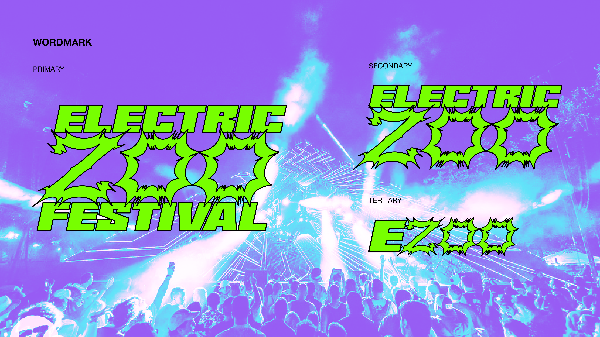
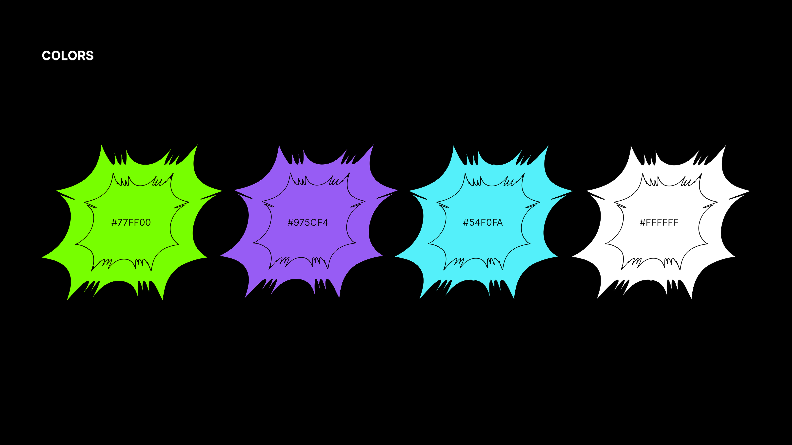
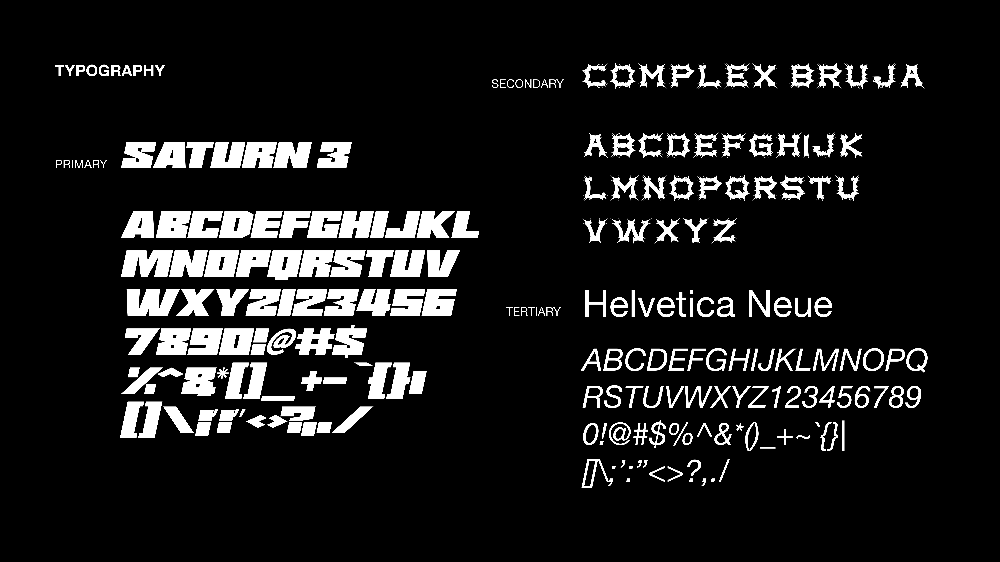
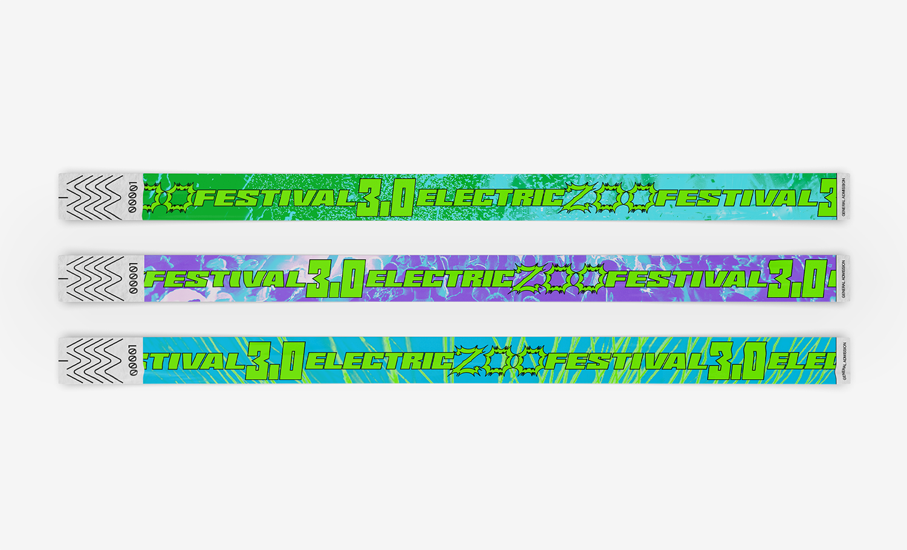
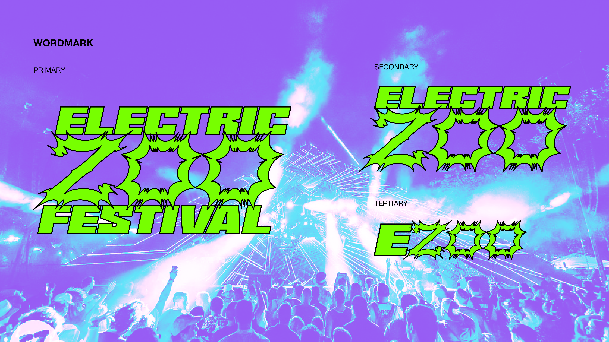
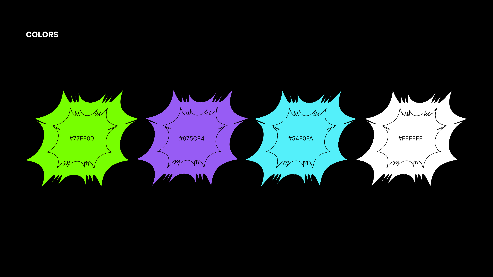
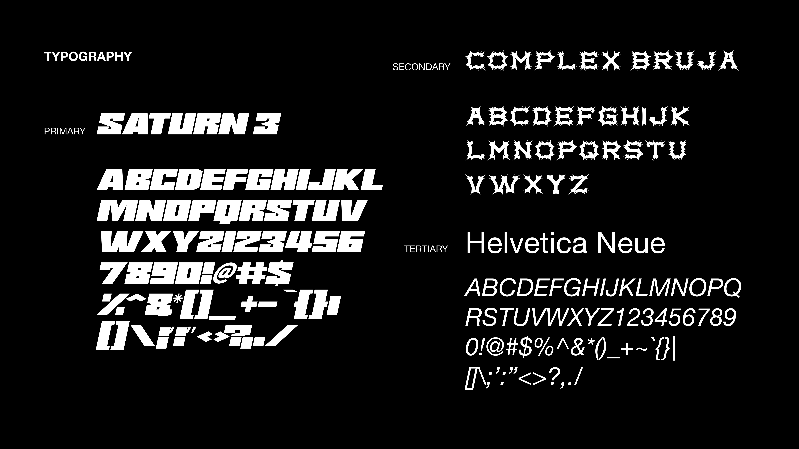
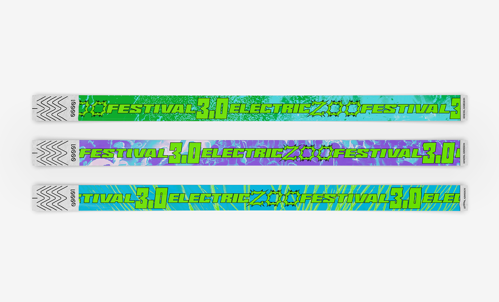
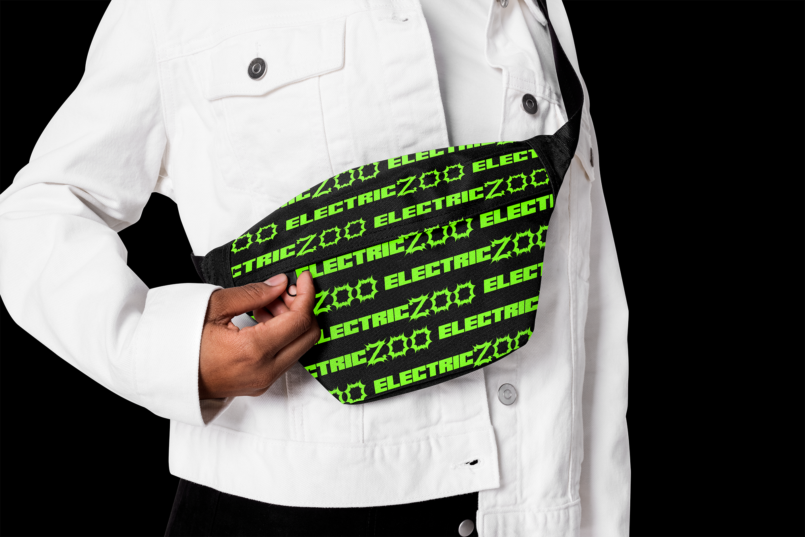
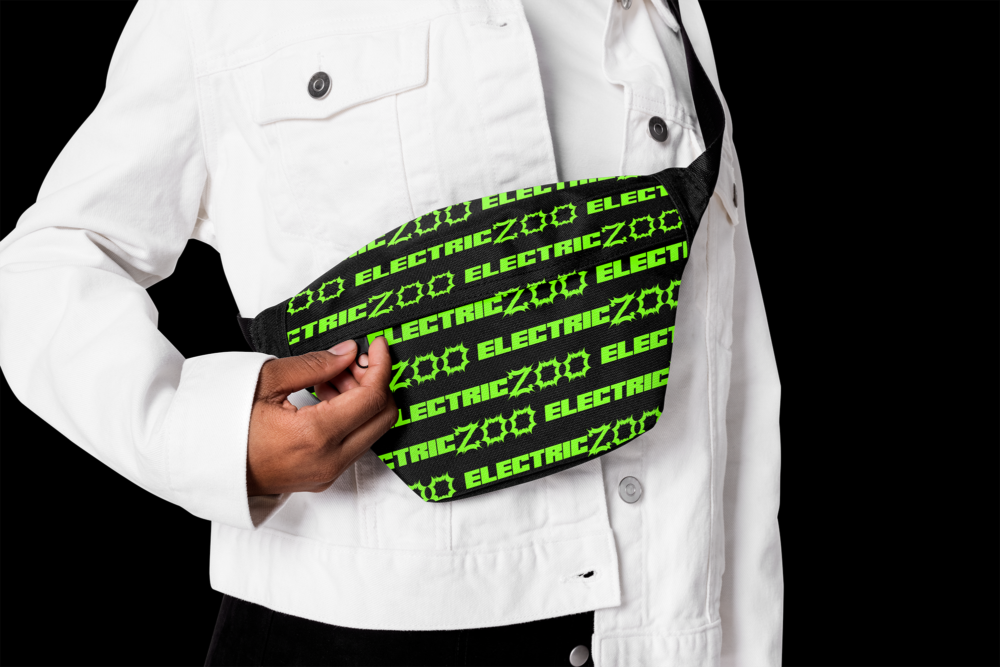

A music-based graphic designer in New York City
☞Learn More☜
Electric Zoo Reimagined
I gave New York's Electric Zoo Festival a vibrant, youthful makeover. The
original branding lacked the energy to connect with the younger generation
who are central to the festival's audience. I focused on the essence of
raves – a place for fun, letting go, and stress relief.
Branding
 







 
